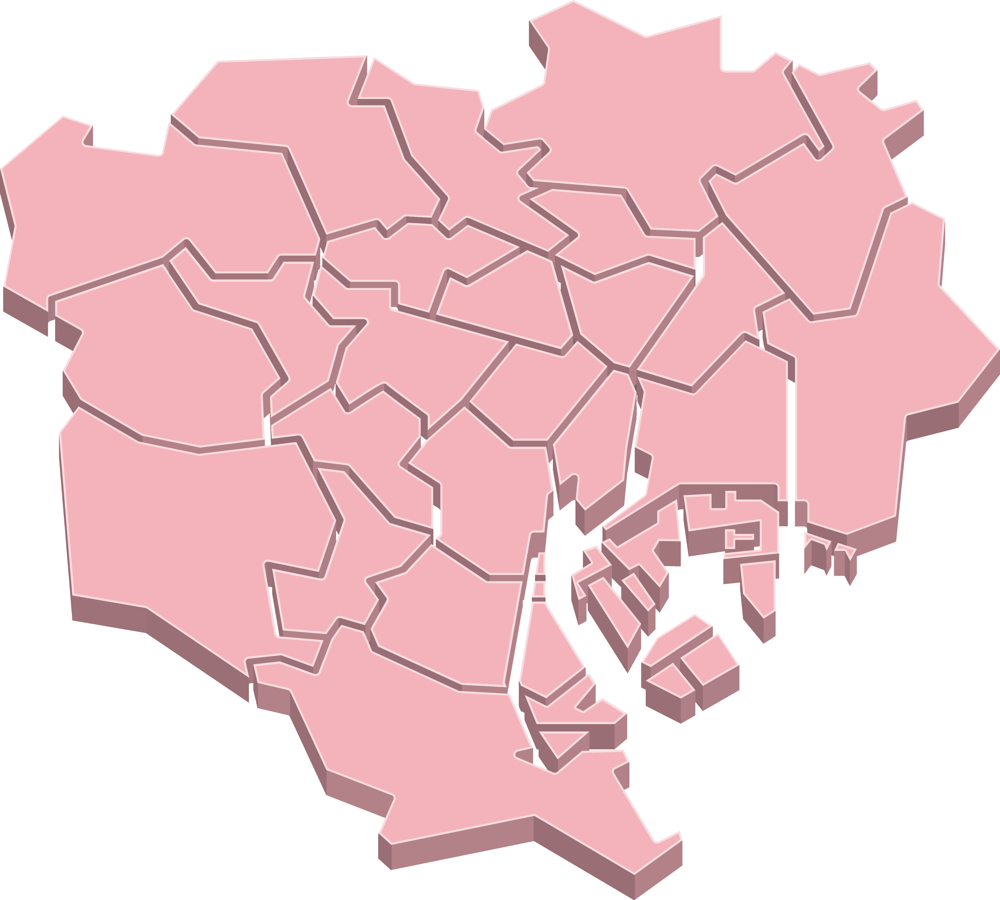
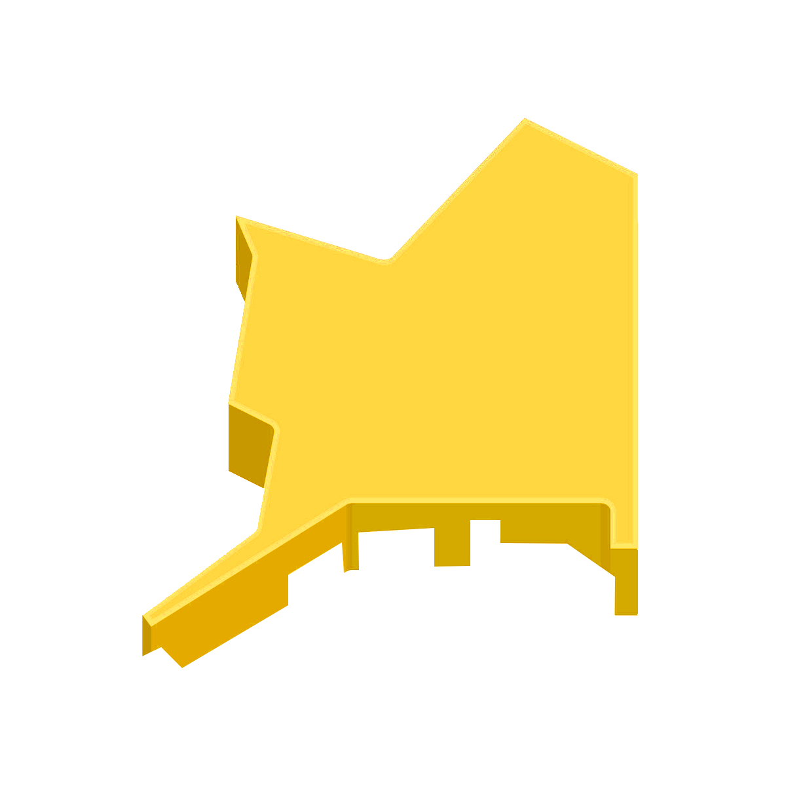

도쿄 스카이트리
도쿄 스카이 트리의 높이는 634미터로 세계 최고로 높은 타워로써 기네스 기록에 인정되었다.
전망대는 350미터와 450미터 높이 2개가 있으며 날씨가 좋은 날은 후지산도 보인다.
츠키지 시장
1935년에 개장한 츠키지 시장은 세계 최대 규모의 거래액을 자랑하는 시장입니다. 츠키지 시장은 프로가 거래하는
장내시장과 일반인을 대상으로 하는 장외시장으로 구분되어 있습니다.
아사쿠사
도쿄에서 가장 오래된 신사로 연간 약 3000만 명이 방문한다. 신사 정면에 있는 약 250미터이 도로는 일본에서
가장 오래된 상점가 중 하나이다.
우에노 아메요코쵸
도쿄역과 아사쿠사 역에도 가깝고 관광객이 많이 몰리는 지역 우에노에 있는 아메요코쵸.
해산물, 후르츠 등 식품은 물론이고 의류, 화장품, 드러그 스토어 등 여러 종류의 상점들이 있다.
시부야 스크램블 교차로
많은 인파로 넘쳐나는 시부야 스크램블 교차로. 한번에 3000명이 횡단보도를 건넌다고 할 정도로 많은 사람이 모이는 지역이다.